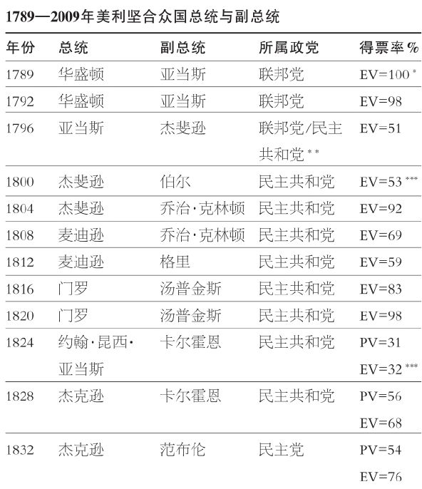
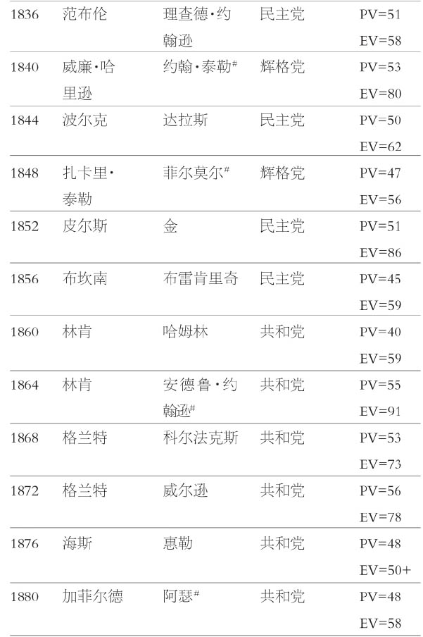
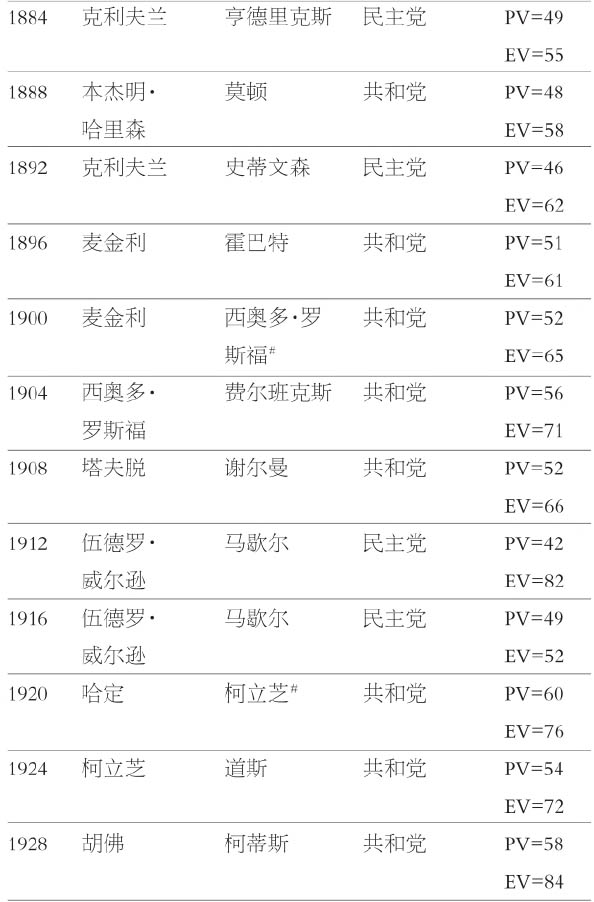
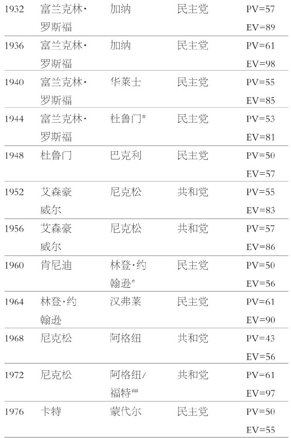
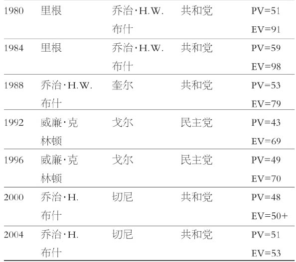

注意：PV=普选得票百分比；EV=选举人团得票百分比
*普选得票率表直到1824年才开始提供；选举人团得票百分比只是针对总统；竞选得票第二名为副总统，他得到不一样的得票率，这一状态直到第十二条修正案得到批准为止。
**杰斐逊竞选排名第二，担任副总统，属于不同的党派。
***选举最终进入众议院程序。
#总统死亡，继任总统职位。
##副总统阿格纽辞职，福特根据宪法第二十二条修正案程序被任命为副总统；尼克松辞职时福特接任总统。
来源：数据汇编自Machael Nelson，ed.，Congressional Quarterly's Guide to the Presidency（Congressional Quarterly，1996），1667-69.